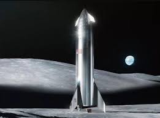

Space Exploration Technologies Corp. ( SpaceX ) - Amerikaning aerokosmik ishlab chiqaruvchisi va kosmik transport xizmatlarini ko'rsatish markazi, shtab-kvartirasi Kaliforniyaning Xotorn shahrida joylashgan.
SpaceX, in full Space Exploration Technologies Corporation, American aerospace company founded in 2002 that helped usher in the era of commercial spaceflight. It was the first private company to successfully launch and return a spacecraft from Earth orbit and the first to launch a crewed spacecraft and dock it with the International Space Station (ISS). Headquarters are in Hawthorne, California.
SpaceX was formed by entrepreneur Elon Musk in the hopes of revolutionizing the aerospace industry and making affordable spaceflight a reality. The company entered the arena with the Falcon 1 rocket, a two-stage liquid-fueled craft designed to send small satellites into orbit. The Falcon 1 was vastly cheaper to build and operate than its competitors, a field largely populated by spacecraft built by publicly owned and government-funded companies such as Lockheed Martin and Boeing. Part of the rocket’s cost-effectiveness was made possible by the SpaceX-developed Merlin engine, a cheaper alternative to those used by other companies. SpaceX also focused on making reusable rockets (other launch vehicles are generally made for one-time use).

Mask ta'kidlaganidek, uning maqsadlaridan biri kosmosga kirish narxini pasaytirish va ishonchliligini oshirish , natijada o'n baravar ko'pdir. Bosh ijrochi direktor Elon Mask shunday dedi: "Men funt uchun 500 AQSh dollari (1100 AQSh dollari / kg) yoki undan kamiga erishish mumkin deb o'ylayman". Bundan tashqari, Mask kosmosda sayohat qilishni "deyarli hamma" uchun qulay qilishni xohlashini aytdi.
SpaceX-ning asosiy maqsadi tez qayta ishlatilishi mumkin bo'lgan uchirish tizimini ishlab chiqish edi . 2013 yil mart oyidan boshlab ushbu texnologiyani ishlab chiqish bo'yicha ommaviy ravishda e'lon qilingan jihatlar orasida past balandlikdagi va past tezlikda ishlaydigan Grasshopper rvoz sinov vositasining faol sinov kampaniyasi , [60] [61] [62] va baland balandlikdagi, baland missiya tugagandan so'ng tezlikni oshiruvchi Falcon 9 test sinovi. 2015 yilda SpaceX 2015 yil 21 dekabrda birinchi orbital raketa bosqichiga muvaffaqiyatli qo'ndi.
2017 yilda SpaceX sho'ba korxonasi - "Boring Company" ni tashkil etdi va SpaceX shtab-kvartirasi va ishlab chiqarish korxonasi yonida va unga yaqin bo'lgan joyda, qisqa masofada ishlaydigan SpaceX xodimlaridan foydalangan holda, qisqa sinov tunnelini qurish bo'yicha ishlarni boshladi [64] . May 2018, [65] [66] va dekabr 2018 yilda jamoatchilikka ochildi [67] 2018-chog'ida tunnel kompaniyasi bo'ldi amalga o'ralgan alohida kirib korporativ shaxs Xususiy kapital 6% SpaceX ketadi bilan, kamida 10% uchun dastlabki xodimlar va qolgan mablag 'Elon Muskga tegishli.
At Xalqaro tipi Kongressi 2016 yil, miskin Mars erishish uchun katta kosmik qurish, uning rejalarini e'lon qildi. Yulduzli kemadan foydalanib, Mask 2022 yilda kamida ikkita ekipajsiz yuk kemalarini Marsga jo'natishni rejalashtirgan. Birinchi topshiriqlar suv manbalarini qidirish va yoqilg'i quyish zavodi qurish uchun ishlatilishi kerak edi . Mask, shuningdek, birinchi odamlarni qo'shib, 2024 yilda Marsga to'rtta qo'shimcha kemani uchirishni rejalashtirgan. U erdan, Mars koloniyasini yaratish uchun qo'shimcha missiyalar ishlaydi. [ Ammo bu maqsadlar kechikishlarga duch kelmoqda. Maskning Marsni uzoq muddat joylashishi haqidagi tashviqoti SpaceX loyihalari qurish uchun mo'ljallangan narsalardan ancha yuqori; Marsni muvaffaqiyatli kolonizatsiyalashi oxir-oqibat odamlarning Marsda o'sishini o'nlab yillar davomida o'sishiga ko'maklashish uchun ko'proq iqtisodiy sub'ektlarni jalb qiladi - shaxslar, kompaniyalar yoki hukumatlar.